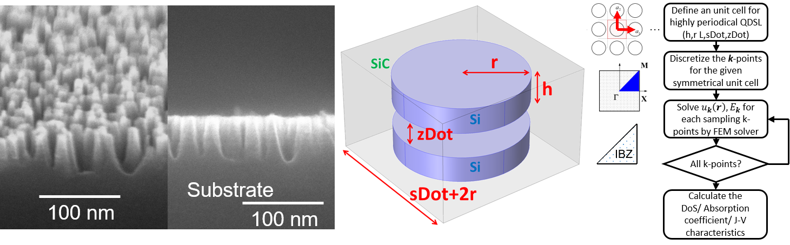
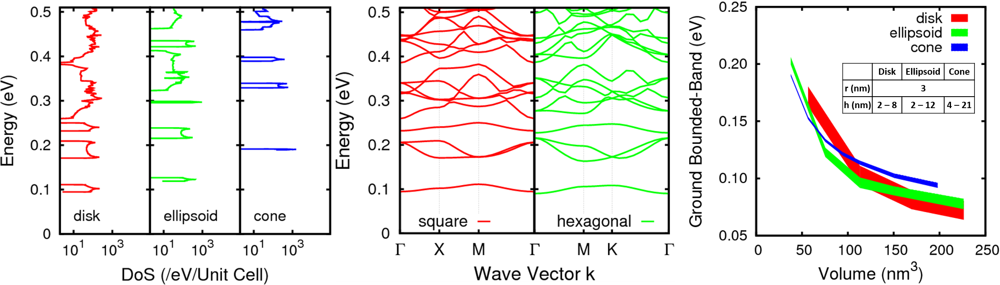

Education
National Chiao Tung University (NCTU), Taiwan
B.S. in Electrical and Computer Engineering • Sept. 2012 — Jun. 2015
GPA: 3.98/4.00, 141 credits•Major GPA: 4.00/4.00, 105 credits
Department/ Class rank: 1/183, 1/42
I received a Bachelor of Science degree in the Department of Electrical and Computer Engineering (ECE) in three years. Moreover, I graduated as the top-ranked student among 4 four classes in the ECE department composed of 183 students.
National Chiao Tung University (NCTU), Taiwan
Ph.D. Student in Communications Engineering • Aug. 2015 — Present
GPA: 4.00/4.00, 3 credits
Advisor: Prof. Yiming Li
Soon after graduating from the ECE department, in order to nurture my research potential, I start to pursue a Ph.D. program in the Institute of Communications Engineering (CM). Meanwhile, Professor Li encourages me to chase my dream of joining the cutting-edge research in the top-notch academic environment. Although the program was distributed under communications department, my research mainly focuses on the device physics of nanomaterials, including quantum transport, miniband formation, and electronic properties, and its applications in energy-harvesting devices.
Broke the record of being the youngest student pursuing Ph.D. at ECE NCTU.
2015 CNA News press
Stanford University, CA, USA
Visiting Student Researcher in Electrical Engineering • July 2016 — Present
Advisors: Dr. Blanka Magyari-Köpe, Prof. Yiming Li, and Prof. Yoshio Nishi
Recommended by Prof. Yiming Li and the friendship between Prof. Yiming Li and Prof. Yoshio Nishi, I seize a chance to work in Nishi Nano-Electronics Group. While there, my research mainly focuses on the accuracy of methodologies, the device physics, contact engineering, and doping engineering of 2D materials. The results collaborated with Prof. H.-S. Philip Wong by demostrating the perspective of scandium contact from the theoretical point of view and presented in the Initiative for Nanoscale Materials and Processes (INMP) meeting. (INMP agenda)

Research
2D Materials: First-Principles Simulations
Publications: C1• July 2016—Present
Revealing the electronic properties of black phosphorus and transition metal dichalcogenides by Ab Initio simulation. The topics including top and edge contact, different contact materials, and the impact of dielectric materials. In this project, we join the research project with Taiwan Semiconductor Manufacturing Company (TSMC).
Multilayer Quantum Dot Solar Cell
Publications: J1, J2, J3, J6, C2• Feb. 2013—Present
Evaluating how the number of quantum dot array layers and the spacing between each layers have impact on its bandstructure, density of state and conversion efficiency in Si/SiC and Ge/Si quantum dot solar cell. In this project, we internationally collaborate with Tohoku university and combine our simulation with their experiment works.

Geometry of Quantum Dot Solar Cell
Publications: J4, B1, C3, C4• Feb. 2013—Present
Apply the new finite-element method and numerically reveal the Ge/Si quantum dot's configuration have impacted on its minibands formation, density of state, and efficiency in quantum dot solar cell. Except for the geometry of quantum dot (radius, thickness, and spacing), the shape and the arrangement of quantum dot were also highlighted in this project.

G-factor Engineering in Nano-Disks
Publications: J5, C5• Feb. 2013—Present
By applying the eight-band Kane model, we had performed 3D finite-element simulations of the effective g-factor for electrons confined in GaAs/AlxGa1-xAs quantum nano-disks. We have clarified the impact of the inter-band coupling and the electron wave function distribution in the nano-disks on the effective g-factor.
Honors
The Valedictorian of ECE
Jun. 2016
Recruited as the valedictorian of ECE because of the highest GPA (4.22/4.3, 3.98/4.00, or 94.23/100.00) among the graduating students, 183 students, even though I already graduated for one year.
ZyXEL Educational Fellowship
Cash prize: USD 4,000• Sept. 2013
The most competitive fellowship in undergraduate schools. The goal of
the fellowship is to approve the effort of the honorees and motivate them to go further so that
they will contribute to the campus and Taiwan in the future.
2015 News press
Four Times Presidential Awards
Cash prize: USD 400• Jun. 2013, Feb. 2014, Jun. 2014, Feb. 2015
In each semester, this awards are given to the students whose average grades are on the top 5% in the class.
First Prize in NCTU Freshman Cup Programming Contest
Cash prize: USD 400•Sept. 2013
A contest that encourages the freshman from all departments to polish their programming skills. There were totally 10 teams with 30 applicants.
2013 ECE News
Excellent Work in NCTU ECE Special Project Contest
Cash prize: USD 140• Sept. 2013
Topic: Modeling and Simulation of Well-Ordered Ge/Si-Nanodisk Array for Quantum Dot Solar Cells.
2015 ECE News
NCTU PhD Outstanding Fellowship
Cash prize: USD 14,400 in total• Sept. 2015—Sept. 2016
The most competitive fellowship for NCTU Ph.D. students.
Skills
- Proficient at Java, C/C++, Matlab.
- Had experience at VASP, COMSOL, and Linux/Unix.
- Chinese (Traditional): Native Speaker
- English: Fluent (TOEFL: 101)
- Japanese: Beginner